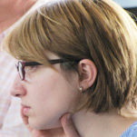
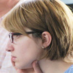
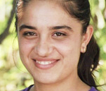
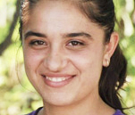

TEKALI PROSSES: THE FRONTIER RESOURCE
AND
THE MECHANISMS OF THE IMPACT ON THE SITUATION
ON THE DIVIDING LINE
The minutes of the public hearing
21.07.2012. The village of Tekali, intersection of the borders of the three South-Caucasian republics; with participation of dwellers of Akstafa, Baku, Ganja, Gazakh, Gyumri, Ijevan, Kutaisi, Marneuli, Noemberyan, Tbilisi, Tovuz, Yerevan and the frontier villages of Armenia, Azerbaijan and Georgia.
Organizers of the hearing:
Teqali Association, Georgia
Center of Regional Partnership and Community Development, Azerbaijan
Caucasus Center of Peace-Making Initiatives, Armenia
Photo: Onik Krikorian, Galina Petriashvili, Irakli Chikhladze, Nugzar Kukhreidze, CCPMI
The hearing passed in framework of Mock Court for Human Rights project by support of National Endowment for Democracy (USA)
21.07.2012. The village of Tekali, intersection of the borders of the three South-Caucasian republics; with participation of dwellers of Akstafa, Baku, Ganja, Gazakh, Gyumri, Ijevan, Kutaisi, Marneuli, Noemberyan, Tbilisi, Tovuz, Yerevan and the frontier villages of Armenia, Azerbaijan and Georgia.
Organizers of the hearing:
Teqali Association, Georgia
Center of Regional Partnership and Community Development, Azerbaijan
Caucasus Center of Peace-Making Initiatives, Armenia
Photo: Onik Krikorian, Galina Petriashvili, Irakli Chikhladze, Nugzar Kukhreidze, CCPMI
The hearing passed in framework of Mock Court for Human Rights project by support of National Endowment for Democracy (USA)
PART 1. THE FRONTIER RESOURCE

Zaur Dargali, Marneuli, Georgia: Dear friends and guests, first of all, I would like to thank our organizers, who gave me the opportunity to deliver this talk. My short talk is the result of long pondering on how to approach the subject and what we mean when speaking about the frontier resource in the Tekali process.
Before I come to the subject, I’d like to wish good luck to all participants of the Tekali process, to everyone, who wants that there be peace in the South Caucasus. I hope the process that started in Tekali will be really fruitful.
The participants of Tekali hearings often ask me: what people live in these villages? Are there Armenians or Georgians among them? Thus I’d like to start with informing you about the region, in particular, about the Marneuli municipality, which the village of Tekali belongs to. The municipality as well as the whole region of Kvemo Kartli is mostly populated by Borchaly Turks or Azeri people: they constitute up to 85 percent of the population. Up to 10 000 Georgians and Armenians are also living here. Some of their villages neighbor with ours; there are even mixed villages, where Armenian and Azeri, Armenian and Georgian, Georgian and Azeri people live together or side by side.
As to our interrelations, let me start with the fact that I am living in the town of Marneuli, and my neighbors are Armenians: our houses stand side by side. As far as I remember, we haven’t had any problems since my childhood. We used to exchange some gifts on high days and holidays, and it isn’t a rare case in Marneuli. There have never been any problems on the ethnic grounds in my neighborhood. There were no such things in Georgia even in the time of the Nagorno-Karabakh conflict. There were Armenians among my classmates, and we could quarrel or fight with one another, but never on ethnic grounds – mostly over a girl☺.
But, of course, there have been some incidents. I have told Georgi that when our neighbor Uncle Leva relocated his garage very close to the entrance of our house, my granny said, “Karabakh isn’t enough to them now: they are occupying the land before our very door.” (The audience laughs.) Or another episode: when I was a boy, we were on holidays in Tetritskaro (it’s a nearby district with good climate), and I made friends with Armenian kids, a girl and her brother. We used to play together, and once they invited me to their home, and when I came in, I heard her mother speaking aggressively. I heard the word Turks, Turks, and something… very hostile. It vexed me; on the other hand, I had already begun to realize that, whatever you may say, it was a fact: I was a Turk. (The audience laughs.) These two instances show that stereotyped attitudes do exist, but, on the other side, there is the positive experience of Armenian-Azerbaijani interrelations in Georgia, the experience of coexistence without actual conflicts. You can see it with your own eyes.
Before I come to the subject, I’d like to wish good luck to all participants of the Tekali process, to everyone, who wants that there be peace in the South Caucasus. I hope the process that started in Tekali will be really fruitful.
The participants of Tekali hearings often ask me: what people live in these villages? Are there Armenians or Georgians among them? Thus I’d like to start with informing you about the region, in particular, about the Marneuli municipality, which the village of Tekali belongs to. The municipality as well as the whole region of Kvemo Kartli is mostly populated by Borchaly Turks or Azeri people: they constitute up to 85 percent of the population. Up to 10 000 Georgians and Armenians are also living here. Some of their villages neighbor with ours; there are even mixed villages, where Armenian and Azeri, Armenian and Georgian, Georgian and Azeri people live together or side by side.
As to our interrelations, let me start with the fact that I am living in the town of Marneuli, and my neighbors are Armenians: our houses stand side by side. As far as I remember, we haven’t had any problems since my childhood. We used to exchange some gifts on high days and holidays, and it isn’t a rare case in Marneuli. There have never been any problems on the ethnic grounds in my neighborhood. There were no such things in Georgia even in the time of the Nagorno-Karabakh conflict. There were Armenians among my classmates, and we could quarrel or fight with one another, but never on ethnic grounds – mostly over a girl☺.
But, of course, there have been some incidents. I have told Georgi that when our neighbor Uncle Leva relocated his garage very close to the entrance of our house, my granny said, “Karabakh isn’t enough to them now: they are occupying the land before our very door.” (The audience laughs.) Or another episode: when I was a boy, we were on holidays in Tetritskaro (it’s a nearby district with good climate), and I made friends with Armenian kids, a girl and her brother. We used to play together, and once they invited me to their home, and when I came in, I heard her mother speaking aggressively. I heard the word Turks, Turks, and something… very hostile. It vexed me; on the other hand, I had already begun to realize that, whatever you may say, it was a fact: I was a Turk. (The audience laughs.) These two instances show that stereotyped attitudes do exist, but, on the other side, there is the positive experience of Armenian-Azerbaijani interrelations in Georgia, the experience of coexistence without actual conflicts. You can see it with your own eyes.

Not knowing the State language, Georgian language, many Azeri people in Georgia watch Azerbaijani TV channels, many Armenians Armenian ones. Of course, it contributes to superficial stereotypes, but it has never led to serious discords.
The other day we celebrated the wedding of Salman. He is one of the organizers of our today’s meeting, and I’d like to congratulate him publicly now. (Applause.) We were talking with local boys at the wedding, and a common friend of us (he’s here too) said: it doesn’t matter whether Armenian and Azeri people are intimate with or love one another; we all want peace, and that’s important. That means that we must create common values. Love or intimacy is not so important. We may have some ideologies of our own, but we must realize that we want peace in the Caucasus, and it must become our priority. We should make our national identifications a second-plan issue and think how to base our relations on other values. It was said, for instance, that we should build economic relations.
Speaking about the frontier resource, I’d like to state that we all have an excellent chance to create new common values and normal relations: we know that everyone wants peace; we should just use this desire practically and give people a chance to rub shoulders with one another and solve some questions together. I will be very glad if more young people are invited to take part in the process – it is my proposal. It is the young generation that should start everything and create a common space for peace and development. We should get the youth involved in debates and discussions. There are a lot of projects for Baku’s and Yeravan’s youth, but those boys and girls are somewhat far from the conflict, they do not take it to heart as we do. We should get involved young people from the frontier zone, and Tekali is an excellent place for their meetings. First, it is not far from their homes; second, Tekali will become a nook of peace to them, and the idea will get even more prospects.
The other day we celebrated the wedding of Salman. He is one of the organizers of our today’s meeting, and I’d like to congratulate him publicly now. (Applause.) We were talking with local boys at the wedding, and a common friend of us (he’s here too) said: it doesn’t matter whether Armenian and Azeri people are intimate with or love one another; we all want peace, and that’s important. That means that we must create common values. Love or intimacy is not so important. We may have some ideologies of our own, but we must realize that we want peace in the Caucasus, and it must become our priority. We should make our national identifications a second-plan issue and think how to base our relations on other values. It was said, for instance, that we should build economic relations.
Speaking about the frontier resource, I’d like to state that we all have an excellent chance to create new common values and normal relations: we know that everyone wants peace; we should just use this desire practically and give people a chance to rub shoulders with one another and solve some questions together. I will be very glad if more young people are invited to take part in the process – it is my proposal. It is the young generation that should start everything and create a common space for peace and development. We should get the youth involved in debates and discussions. There are a lot of projects for Baku’s and Yeravan’s youth, but those boys and girls are somewhat far from the conflict, they do not take it to heart as we do. We should get involved young people from the frontier zone, and Tekali is an excellent place for their meetings. First, it is not far from their homes; second, Tekali will become a nook of peace to them, and the idea will get even more prospects.


Of course, the experience of contacts between Azeri and Armenian inhabitants of Georgia must be utilized actively. For instance, we could invite some Khojorni villagers to our meeting. Perhaps, you have heard of that village where Azeris and Armenians live side by side and go to the same school. Perhaps they will have many interesting things to tell about their experience of coexistence and interrelations.
Formerly, as you perhaps remember, there was a market place near the Georgian border, in Sadakhlo, where Georgian, Azeri and Armenian people used to trade side-by-side. That showed that conflicts retreat into the shadow if there is a common interest. Maybe, Tekali, too, will be utilized for striking up transborder economic relations in future, which, in its turn, will bring about personal contacts. All that – the experience of Armenian-Azeri communications, economic relations – may become a good resource for peacebuilding.
Of course, we Georgian Azeri people are concerned with the conflict. We often discuss it; we want to see how the Karabakh problem may be settled. We need to learn how Azeri people in Azerbaijan, in Georgia and in the world see its solution, and also how Armenian people in Armenia, in Georgia and in the world do. And the Tekali process is a good chance to everyone to take a seat at the table along with the others and give his opinion: how he sees the solution of the problem. It’s time to get to the level where we will openly say one another what solution the problem has, whether we are ready to give up or offer something, whether we are ready to change something and how we are going to do it. There has been no serious conversation on the conflict solution between Georgian Azeris and Armenians, and I’d like to know how they actually perceive the conflict.
Finally, I would like to say that the presentations of our visions of the problem solution and the discussion on how we should use the Tekali resource with maximum effect are to be more and more open and earnest with every following meeting.
Formerly, as you perhaps remember, there was a market place near the Georgian border, in Sadakhlo, where Georgian, Azeri and Armenian people used to trade side-by-side. That showed that conflicts retreat into the shadow if there is a common interest. Maybe, Tekali, too, will be utilized for striking up transborder economic relations in future, which, in its turn, will bring about personal contacts. All that – the experience of Armenian-Azeri communications, economic relations – may become a good resource for peacebuilding.
Of course, we Georgian Azeri people are concerned with the conflict. We often discuss it; we want to see how the Karabakh problem may be settled. We need to learn how Azeri people in Azerbaijan, in Georgia and in the world see its solution, and also how Armenian people in Armenia, in Georgia and in the world do. And the Tekali process is a good chance to everyone to take a seat at the table along with the others and give his opinion: how he sees the solution of the problem. It’s time to get to the level where we will openly say one another what solution the problem has, whether we are ready to give up or offer something, whether we are ready to change something and how we are going to do it. There has been no serious conversation on the conflict solution between Georgian Azeris and Armenians, and I’d like to know how they actually perceive the conflict.
Finally, I would like to say that the presentations of our visions of the problem solution and the discussion on how we should use the Tekali resource with maximum effect are to be more and more open and earnest with every following meeting.

Magerram Goyuşoglu, Gazakh, Azerbaijan: Dear friends! In the first place, I would like to greet you all. Dear Zaur, dear representatives of Azerbaijan, Armenia and Georgia, I would like to emphasize some points.
Our relations had been friendly and brotherly before this 24-year-old conflict. I remember my childhood: I had a friend in Sevan, and we used to visit him. But in spite of all the past, nowadays I can see the conflict settlement but very notionally. Neither side believes the other – I mean not only politicians but also the peoples. As a result, dismal mood prevails in the region. Unsurprisingly, it’s difficult to find any mechanism for settling our relations. .
I believe we should focus on the possible contribution of local frontier communities. I think the Georgian frontier communities should take part in establishing the contacts between Armenian and Azeri communities. I also believe that armed forces of either side, either State, mustn’t violate the cease-fire.
I remember when the Karabakh war started – it was at the time of my youth – the UN appeal was heard on TV: cease the fire on the frontier! Perhaps we should do something in order to return this practice. In no circumstances should a farmer tending his plot be assaulted!
We must come to common terms in order to establish mutual confidence. I believe we meet here not just to have a meeting but in order to come to some common terms and common decisions. Thank you for your attention.
Our relations had been friendly and brotherly before this 24-year-old conflict. I remember my childhood: I had a friend in Sevan, and we used to visit him. But in spite of all the past, nowadays I can see the conflict settlement but very notionally. Neither side believes the other – I mean not only politicians but also the peoples. As a result, dismal mood prevails in the region. Unsurprisingly, it’s difficult to find any mechanism for settling our relations. .
I believe we should focus on the possible contribution of local frontier communities. I think the Georgian frontier communities should take part in establishing the contacts between Armenian and Azeri communities. I also believe that armed forces of either side, either State, mustn’t violate the cease-fire.
I remember when the Karabakh war started – it was at the time of my youth – the UN appeal was heard on TV: cease the fire on the frontier! Perhaps we should do something in order to return this practice. In no circumstances should a farmer tending his plot be assaulted!
We must come to common terms in order to establish mutual confidence. I believe we meet here not just to have a meeting but in order to come to some common terms and common decisions. Thank you for your attention.


Voskan Sargsyan, Noemberyan, Armenia: There have been no calm dawns or sunsets on the Armenia-Azerbaijan frontier for more than 20 years. The situation is neither peace, nor war. Not only the military suffer from regular cease-fire violations but civilians: farmers and shepherds, ordinary people, who live in frontier villages. The long-lasting conflict has left a deep trace in the life of both peoples: it has taken a heavy toll, both in material losses and casualties. Certain psychological barriers have arisen between representatives of the two peoples. But a war, how long or bloody might it be, always ends at a negotiation table, and those, who were at enmity, begin communicating and cooperating in various spheres.
So far the Armenians and Azeris have negotiated on the State level, with the assistance of mediator countries and international organizations. The negotiations haven’t brought any concrete results. Their most positive result has been the non-resumption of full-scale military operations. My personal opinion is: had there been no mediators, they would have been more effective. A mediator always has his own interest, hasn’t he, which may mismatch the interests of conflicting parties or the cause of lasting peace. Thus, the geopolitical interests of the countries co-chairing the OSCE Minsk group – Russia, France and the US – which deals with the Karabakh problem may mismatch Armenia’s and Azerbaijan’s interests and the principles of the peaceful and prompt conflict settling. Now the Tekali process has started attracting citizens to take part in Armenian-Azerbaijani dialogue, through which the reconciliation may be achieved. The frontier people know the worth of peace because they live just near the confrontation line, within a dangerous zone. True, they have lost friends, relatives and neighbors and some of them have negative attitude to those living across the border and do have psychological problems. But I believe the longing for peace prevails on the frontier. After all, people realize that war bears new war, that starting war is easy but finishing is onerous.
So far the Armenians and Azeris have negotiated on the State level, with the assistance of mediator countries and international organizations. The negotiations haven’t brought any concrete results. Their most positive result has been the non-resumption of full-scale military operations. My personal opinion is: had there been no mediators, they would have been more effective. A mediator always has his own interest, hasn’t he, which may mismatch the interests of conflicting parties or the cause of lasting peace. Thus, the geopolitical interests of the countries co-chairing the OSCE Minsk group – Russia, France and the US – which deals with the Karabakh problem may mismatch Armenia’s and Azerbaijan’s interests and the principles of the peaceful and prompt conflict settling. Now the Tekali process has started attracting citizens to take part in Armenian-Azerbaijani dialogue, through which the reconciliation may be achieved. The frontier people know the worth of peace because they live just near the confrontation line, within a dangerous zone. True, they have lost friends, relatives and neighbors and some of them have negative attitude to those living across the border and do have psychological problems. But I believe the longing for peace prevails on the frontier. After all, people realize that war bears new war, that starting war is easy but finishing is onerous.
 


The Tekali process has already brought some small but positive results. Our today’s meeting, our civil hearing is one of visual proofs of its potentialities. It is important that representatives of frontier communities are here. Their potential may be used to create the security mechanisms for civilians in the frontier zone.
The chairman of the Caucasus Center of Peacemaking Initiatives Georgi Vanyan has already suggested creating a group of rapid response to violations of frontier people’s rights. I think it should include frontier people from Armenia and Azerbaijan – preferably, the heads of rural communities – as well as representatives of Georgian society. It should hold regular meetings in Tekali, which has become an especial symbol of interaction between the peoples. I think there should be both scheduled meetings – say, monthly ones – and special ones, in case (God forbid) a violation of cease-fire resulted in casualties or injuries among civilians in the frontier area, in order to discuss and react on a specific incident. The instances of cease-fire violations will be reported at the meetings. In order to verify the information, the Georgian members could visit the villages, talk with people and document the material damage or (God forbid) the existence of the wounded or killed. Owing to circumstances beyond our control, the group won’t be able to (and shouldn’t) register fire exchanges between military posts. We cannot consider such incidents: clearly, the two countries’ military authorities and national security services won’t let civilians intervene into their sphere. The group will only deal with the civilians, who suffered from an assault where they are live – for instance, while pasturing their cattle or working on their farm. Working on the dividing line, the group should regularly publish its findings: the statistics of firing at civilians and civilian buildings.
It might be done at press conferences in Tekali or by publishing joint brochures or through Internet or by other ways. Hence, verified and reliable, important information will be spread, and South-Caucasian society, as well as everyone interested in the settlement process, will learn whose armed forces committed more assaults on civilians or villages. That will form public opinion, which may have some restrictive impact and prevent the repetition of assaults. From the military point of view, the assaults on civilians or their villages are senseless: their only results are human grief, impediments to normal life and escalation of psychological problems. In the long run, they generate and intensify hostility between the peoples that have lived side-by-side for centuries.
The chairman of the Caucasus Center of Peacemaking Initiatives Georgi Vanyan has already suggested creating a group of rapid response to violations of frontier people’s rights. I think it should include frontier people from Armenia and Azerbaijan – preferably, the heads of rural communities – as well as representatives of Georgian society. It should hold regular meetings in Tekali, which has become an especial symbol of interaction between the peoples. I think there should be both scheduled meetings – say, monthly ones – and special ones, in case (God forbid) a violation of cease-fire resulted in casualties or injuries among civilians in the frontier area, in order to discuss and react on a specific incident. The instances of cease-fire violations will be reported at the meetings. In order to verify the information, the Georgian members could visit the villages, talk with people and document the material damage or (God forbid) the existence of the wounded or killed. Owing to circumstances beyond our control, the group won’t be able to (and shouldn’t) register fire exchanges between military posts. We cannot consider such incidents: clearly, the two countries’ military authorities and national security services won’t let civilians intervene into their sphere. The group will only deal with the civilians, who suffered from an assault where they are live – for instance, while pasturing their cattle or working on their farm. Working on the dividing line, the group should regularly publish its findings: the statistics of firing at civilians and civilian buildings.
It might be done at press conferences in Tekali or by publishing joint brochures or through Internet or by other ways. Hence, verified and reliable, important information will be spread, and South-Caucasian society, as well as everyone interested in the settlement process, will learn whose armed forces committed more assaults on civilians or villages. That will form public opinion, which may have some restrictive impact and prevent the repetition of assaults. From the military point of view, the assaults on civilians or their villages are senseless: their only results are human grief, impediments to normal life and escalation of psychological problems. In the long run, they generate and intensify hostility between the peoples that have lived side-by-side for centuries.
The potential of the Tekali process can also be used for establishing cooperation between frontier communities. I remember such kind of cooperation between the villages of Doveg, Noemberian district, and Kyamarli, Gazakh district, in the early ’90s, while there were bloody battles in Nagorno-Karabakh. I wrote about it at that time. By prior arrangement, Azeri people of Kyamarli came to Doveg on a combine harvester, reaped the wheat and conveyed it to the Armenians’ houses; the Armenians paid them with firewood from their copse. As far as I remember, the BBC got interested in my report. Nowadays wheat fields in the frontier area often become targets for shooting in summer; they burn, the crop gets lost. Several combine operators and drivers, who conveyed harvest, have been wounded or killed. In the framework of activities of the Tekali human rights group of urgent response, the heads of rural communities might achieve an accord between themselves: to promote the truce at the time of harvesting as far as possible. True, it isn’t themselves but armed forces that violate the cease-fire, but I think that, being aware of the community leaderships’ agreement, the headquarters of both parties would be more concerned about keeping the cease-fire regime, and the military wouldn’t open fire at villagers on the other side of the border. Neighboring rural communities could also effectively cooperate in dealing with the problem of the use of water resources. An accord may be achieved: not to obstruct mutual use of natural and artificial irrigation canals.
I comprehend there are lots of things that may impede the cooperation between Armenia’s and Azerbaijan’s frontier communities, but I also comprehend it’s a right way, a path leading to peace. It’s always hard to be the first on an unbeaten path: there may be a lot of perils and obstacles on the way, but, as the Chinese say, the longest way starts with the first step. The first steps to the dialogue and cooperation between Armenia and Azerbaijan’s frontier communities have already been made. It remains only to go on and come to concrete and practical interaction after identifying its format and mechanism as well as the people who should be involved, which may be done at workshops and discussions in Tekali.
I comprehend there are lots of things that may impede the cooperation between Armenia’s and Azerbaijan’s frontier communities, but I also comprehend it’s a right way, a path leading to peace. It’s always hard to be the first on an unbeaten path: there may be a lot of perils and obstacles on the way, but, as the Chinese say, the longest way starts with the first step. The first steps to the dialogue and cooperation between Armenia and Azerbaijan’s frontier communities have already been made. It remains only to go on and come to concrete and practical interaction after identifying its format and mechanism as well as the people who should be involved, which may be done at workshops and discussions in Tekali.

Sabina Talybova, Marneuli, Georgia: To us it’s very important to understand what are the third party’s resources. As Zaur told, we have discussed this question for a long while. Of course, we have resources: they are our human resources, interrelations and possible economic relations. But we must very clearly define how they may be used, in what way. Talking is not using. Now in the context of Zaur’s speech I have a suggestion: our meetings must be more practical. We needn’t superficial narrations of our pre-conflict relations or the relations within the third party at the time of the conflict. We must speak about things we can do today in order to settle the conflict. It’s time to speak about concrete things. Of course, it will be painful: someone may look foolish, another one too radical, but it’s time to start it.
Zaur suggested a good thing: we cannot do without young people directly concerned with the conflict. I am a third country’s citizen, a Georgian citizen, and the conflict hasn’t affected me personally, but I am Azeri, and, of course, I have my own ethnic viewpoint.
So, in order to get things moving, we necessarily need practical work. And if we keep on meeting and telling about past and present relations, only talking about relations – then we will have nothing but meetings till the end of time. It is expedient to decide what the conflict settlement means to the Azeri – from Azerbaijan or from a third country (in this case, from Georgia), what to the Armenian from Armenia and to one from a third country, from Georgia, and what we are ready to give up in order to reach something concrete, helpful and useful to both parties. Thank you for your attention.
Zaur suggested a good thing: we cannot do without young people directly concerned with the conflict. I am a third country’s citizen, a Georgian citizen, and the conflict hasn’t affected me personally, but I am Azeri, and, of course, I have my own ethnic viewpoint.
So, in order to get things moving, we necessarily need practical work. And if we keep on meeting and telling about past and present relations, only talking about relations – then we will have nothing but meetings till the end of time. It is expedient to decide what the conflict settlement means to the Azeri – from Azerbaijan or from a third country (in this case, from Georgia), what to the Armenian from Armenia and to one from a third country, from Georgia, and what we are ready to give up in order to reach something concrete, helpful and useful to both parties. Thank you for your attention.
PART 2. MECHANISMS OF THE IMPACT ON THE SITUATION
ON THE DIVIDING LINE

Zardusht Alizadeh, Baku, Azerbaijan: Dear ladies and gentlemen, If we examine the sniper war ignoring the broader perspective, we’ll understand nothing. Every military unit, when on the front line, has a sniper, but he has no right to shoot at anybody without an order. It’s not a random exchange of fire, not a spontaneous process: it’s an order. Every bullet is registered. A sniper can shoot only by instructions from the headquarters. Why does his headquarters want people – both civilians and military – to be killed on the front line? To make the impression they haven’t lost the control over the process, that our side, the Azerbaijani one, is still struggling in order to get back Karabakh. The same process is going on in Armenia. When they order to fire, they send their people a message: we are not dawdling, we are rebutting them OK. In the final analysis, there is no result but casualties: privates and officers, sometimes children, sometimes farmers or shepherds, die.
The problem we are discussing today is: what could be done to stop it? I do not think we can do anything if we stick to this concrete problem: the exchange of sniper fire; I think we could do something if we suggest some general solutions. In Azerbaijan, an organization of reserve officers has been monitoring the losses of Azerbaijani army since 2008 – by name, by address: family name, patronymic name etc. Their web portal is www.milaz.info. During the last 4 and a half years the army has lost some 500 people, both rank and file and officers. If we count from 12 May 1994, the day of cease-fire agreement, I think the casualties will approach some 4 thousands. There have been periods of increase and decrease, but anyway, those are hard losses. They are comparable with those of the time of active hostilities, when Azerbaijan lost 14 thousands, Armenia 6 thousands, and several thousand people were wounded.
The problem we are discussing today is: what could be done to stop it? I do not think we can do anything if we stick to this concrete problem: the exchange of sniper fire; I think we could do something if we suggest some general solutions. In Azerbaijan, an organization of reserve officers has been monitoring the losses of Azerbaijani army since 2008 – by name, by address: family name, patronymic name etc. Their web portal is www.milaz.info. During the last 4 and a half years the army has lost some 500 people, both rank and file and officers. If we count from 12 May 1994, the day of cease-fire agreement, I think the casualties will approach some 4 thousands. There have been periods of increase and decrease, but anyway, those are hard losses. They are comparable with those of the time of active hostilities, when Azerbaijan lost 14 thousands, Armenia 6 thousands, and several thousand people were wounded.


How can it be stopped? I think the Armenian colleague was right: nobody will be allowed to interfere with military affairs. If a sniper, a soldier, fire by an order from the headquarters, who gives the order to the headquarters? Political leadership does. When do they give such orders? When, say, Hilary Clinton visits the region. Then they give the order, and shooting starts from both sides, and a certain impression, certain feeling appears… As a political scientist, I had this impression… I interpreted the last exchange of fire as a message to Mrs. Clinton that made it clear to her who was the master of the situation: you don’t butt in – the Caucasus is ours. The order came from Moscow. I think both Armenians and Azeris receive the same orders, and both carry them out diligently. There also are some other motives that make us Azeris and Armenians so interested in those bursts of skirmishes: political activities, presidential elections, parliamentary elections etc. When billions of dollars are in the kitty, frightening is a must. So we defend our Karabakh! Armenians and Azeris defend their Karabakh: an order is given and firing starts, people are scared… We continue our struggle for Karabakh!
As long as there are no peace negotiations, no concrete solutions accounting for legitimate rights of both parties, for civil rights and the firm guarantees of security of Karabakh Armenians and Karabakh Azeris, Armenian and Azeri people in general, we will just have general talks about our readiness to defend our rights. On the other side, if we have nothing concrete, no model of our co-existing, those skirmishes on the front line will continue. This is a very hard and sad pattern, and, unfortunately, civil society has done very little to break it off. Still I believe Georgi Vanyan has launched a very important cause: we attract our societies’ attention to a very painful problem – to the death of young people. We cannot resolve it, but we draw attention of and send a message to our society that one must not be so indifferent to human deaths.
As long as there are no peace negotiations, no concrete solutions accounting for legitimate rights of both parties, for civil rights and the firm guarantees of security of Karabakh Armenians and Karabakh Azeris, Armenian and Azeri people in general, we will just have general talks about our readiness to defend our rights. On the other side, if we have nothing concrete, no model of our co-existing, those skirmishes on the front line will continue. This is a very hard and sad pattern, and, unfortunately, civil society has done very little to break it off. Still I believe Georgi Vanyan has launched a very important cause: we attract our societies’ attention to a very painful problem – to the death of young people. We cannot resolve it, but we draw attention of and send a message to our society that one must not be so indifferent to human deaths.

Georgi Vanyan, Yerevan, Armenia: Dear participants of the Tekali process, in order to come to the point, I have to tell you how it all started. Seven years ago, in 2005, some Azeri and Georgian people were invited to Yerevan, by means of the money that we had collected among Armenian citizens, to discuss a very simple question: is South-Caucasian integration possible? That is how, from a question, the civil initiative South-Caucasian Integration: Alternative Start was born. After that we had our own site and there were meetings, even six-lateral ones: people from Abkhazia, South Ossetia and Nagorno-Karabakh joined us. We conceived projects and arranged exhibitions and master-classes. In every project we tried to find an alternative to what had been done and what was used to be done in the NGO sphere. We were searching a path leading to a transition – from restaurant-tourist peacemaking to a real dialogue.
While we were searching, August 2008 came, with the war and the Russian intervention in the South Caucasus. There were many actors in that war: the military and civilians, journalists and diplomats; there were no human rights defenders, no NGO people or, as they say, civil society. That numerous army of people involved in peacemaking and regional projects capitulated after the very first shot.
During 20 years, we hadn’t managed to create a MECHANISM through which South-Caucasian human rights activists and peacemakers could act or become ACTORS when such an ACTION is vitally important.
To the civil initiative South-Caucasian Integration: Alternative Start, August 2008 meant self-disbanding. We couldn’t help recognizing that since August 2008 Abkhazia, South Ossetia and Nagorno-Karabakh had decisively passed into the Russian occupation zone. Three of the six geographic points of our civil initiative closed under the military barracks regulations. The six-lateral format broke up.
It was in that disbanded and broken format that we held our last meeting in Yerevan in 2009. In fact, for the first two days every speaker used to say the same thing: we are in a deadlock. On the third day, we were preparing for a final press conference. We were preparing to declare we’ve lost peace. It would have meant the cessation of our activities. We were sitting and speaking from morning till late at night. It was almost 4 am, when, after a long and vain discussion on our briefing text, we agreed on the following: there will be no briefing; we’ll carry out our final alternative action. At the morning’s press conference, Timur Tskhovrebov read out a short text, The Appeal of South-Caucasian Citizens: “We ask the governments and parliaments of the South-Caucasian countries to allot 1 sq. km from each country at the crossing-point of their borders and create a South-Caucasian Civil Republic under the UN and OSCE patronage there. People from the whole South Caucasus will be able to come and discuss their vital problems there.”
On that day, 14 April 2009, it was just a demarche, our last action in the six-lateral format. The Armenian press averred that we had suffered a defeat, baptized us South-Caucasus Utopists and kindly expatiated on the primordial flippancy of the Alternative Start.
But they were wrong: we found the exit from the deadlock, when Malkhaz Chemia and I went to look for the crossing-point of our borders and found it here, in Tekali.
While we were searching, August 2008 came, with the war and the Russian intervention in the South Caucasus. There were many actors in that war: the military and civilians, journalists and diplomats; there were no human rights defenders, no NGO people or, as they say, civil society. That numerous army of people involved in peacemaking and regional projects capitulated after the very first shot.
During 20 years, we hadn’t managed to create a MECHANISM through which South-Caucasian human rights activists and peacemakers could act or become ACTORS when such an ACTION is vitally important.
To the civil initiative South-Caucasian Integration: Alternative Start, August 2008 meant self-disbanding. We couldn’t help recognizing that since August 2008 Abkhazia, South Ossetia and Nagorno-Karabakh had decisively passed into the Russian occupation zone. Three of the six geographic points of our civil initiative closed under the military barracks regulations. The six-lateral format broke up.
It was in that disbanded and broken format that we held our last meeting in Yerevan in 2009. In fact, for the first two days every speaker used to say the same thing: we are in a deadlock. On the third day, we were preparing for a final press conference. We were preparing to declare we’ve lost peace. It would have meant the cessation of our activities. We were sitting and speaking from morning till late at night. It was almost 4 am, when, after a long and vain discussion on our briefing text, we agreed on the following: there will be no briefing; we’ll carry out our final alternative action. At the morning’s press conference, Timur Tskhovrebov read out a short text, The Appeal of South-Caucasian Citizens: “We ask the governments and parliaments of the South-Caucasian countries to allot 1 sq. km from each country at the crossing-point of their borders and create a South-Caucasian Civil Republic under the UN and OSCE patronage there. People from the whole South Caucasus will be able to come and discuss their vital problems there.”
On that day, 14 April 2009, it was just a demarche, our last action in the six-lateral format. The Armenian press averred that we had suffered a defeat, baptized us South-Caucasus Utopists and kindly expatiated on the primordial flippancy of the Alternative Start.
But they were wrong: we found the exit from the deadlock, when Malkhaz Chemia and I went to look for the crossing-point of our borders and found it here, in Tekali.
 

Two civil hearings took place here the next year. This year, we had a meeting in June and have a meeting now. Today, on 21 July, we are discussing a mechanism of the impact on the situation on the Armenian-Azerbaijani front line. In my opinion, this mechanism should be the transfer of projects to the fronTwotieTwo civil hearings took place here the next year. This year, we had a meeting in June and have a meeting now. Today, on 21 July, we are discussing a mechanismr, of any projects: seminars and trainings, festivals and concerts. The transfer of projects and permanent tangible presence are an impact, an impact through culture and education, a moral and human rights impact.
Transfer your projects to Tekali and expand towards Berdavan, Armenia, towards Shikhly, Azerbaijan. Let’s start this civil expansion into frontier territories: let’s transfer our projects into the villages that hear shooting, the villages that haven’t communicated with their neighbors for more than 20 years, the villages where people cultivate the soil but cannot gather in the harvest, for “seasonal snipers” appear in the harvest season.
Let’s assure our presence on the front line. Only then we could speak about a genuine monitoring. Only then could we respond to the changing situation.
There is yet another mechanism: the priority of freedom; the priority of new ideas and new people; an inclusive format, open to everyone.
We have no right to bring mercantilism, bureaucracy and formalities along to Tekali. Therefore we need an extraordinary mechanism, that of free space. I ask each of you: help us develop and realize such a mechanism in Tekali.
And now I have to beg your pardon: please stand up! (Everybody does.) Look at the chairs you were sitting on, at these white chairs. They are bought for money donated by a girl from Baku. (Applause.) Irakli has bought them in Tbilisi (applause); Gia has brought them by car (applause) and passed them to Salman (applause). We’ve put them in Sayat Aliyev’s yard. Let me thank our hosts with a low bow for their hospitality. (Applause.)
Now sit down, please, on your Tekali chairs. There are land mines a few hundred meters from us, at the crossing of our three countries’ borders. Let’s try to imagine WHAT should be done to clear the territory and build a Peace Square on it. And while you are sitting and thinking, this is the Tekali process: this is the mechanism that is going to affect the situation on the Armenian-Azerbaijani front line very soon.
Transfer your projects to Tekali and expand towards Berdavan, Armenia, towards Shikhly, Azerbaijan. Let’s start this civil expansion into frontier territories: let’s transfer our projects into the villages that hear shooting, the villages that haven’t communicated with their neighbors for more than 20 years, the villages where people cultivate the soil but cannot gather in the harvest, for “seasonal snipers” appear in the harvest season.
Let’s assure our presence on the front line. Only then we could speak about a genuine monitoring. Only then could we respond to the changing situation.
There is yet another mechanism: the priority of freedom; the priority of new ideas and new people; an inclusive format, open to everyone.
We have no right to bring mercantilism, bureaucracy and formalities along to Tekali. Therefore we need an extraordinary mechanism, that of free space. I ask each of you: help us develop and realize such a mechanism in Tekali.
And now I have to beg your pardon: please stand up! (Everybody does.) Look at the chairs you were sitting on, at these white chairs. They are bought for money donated by a girl from Baku. (Applause.) Irakli has bought them in Tbilisi (applause); Gia has brought them by car (applause) and passed them to Salman (applause). We’ve put them in Sayat Aliyev’s yard. Let me thank our hosts with a low bow for their hospitality. (Applause.)
Now sit down, please, on your Tekali chairs. There are land mines a few hundred meters from us, at the crossing of our three countries’ borders. Let’s try to imagine WHAT should be done to clear the territory and build a Peace Square on it. And while you are sitting and thinking, this is the Tekali process: this is the mechanism that is going to affect the situation on the Armenian-Azerbaijani front line very soon.


Malkhaz Chemia, Tbilisi, Georgia: I’d like to continue in the context of our colleague Sabina, who brought up a pressing question of concrete actions and definite programs. As far as I know, they are included in today’s agenda, but I’d like to add an extra touch. We are in a very hospitable house, but a meeting place is not a working place. Our organization, our network, is growing, and one of the directions we work in is creating a conference hall in Tekali. It won’t be only for our association. It is a long-standing idea of those who initiated the movement. I can show you an outline sketch. This is one of the draft projects. (He shows the outline.) Just imagine: this building will stand on the border, in the hottest point of the Caucasus; it will be a symbol of peace, this very building, against the background of rural houses. And it is not Vasyuki: it is reality. This is what we will reach, starting with these chairs: we will work on our concrete projects in this building. (Applause.)


PART 3. NONVIOLENT PEACEFORCE: WORK EXPERIENCE
AND PLANS IN THE SOUTH CAUCASUS

Steve Young
Steve Young, Brussels, Belgium: I am grateful to organizers for the possibility to participate in this debate. Our organization came to the Caucasus not long ago. By a fluke, Bernard O’Sullivan from our Brussels office is here, too. It is not our first visit to Tekali. When we were here last time, we noticed that this process was the only one of its kind in the Caucasus. That’s why I’d like to tell you a little bit of our organization and present it to you all.
As a professional group for protecting civilians and peacekeeping, Nonviolent Peaceforce (NP) fosters dialogue between opposing parties in conflict zones and provides its protective presence for civilians. With the headquarters in Brussels, NP teams are presently deployed in the Philippines, in South Sudan and the South Caucasus. The creation of an office in Myanmar is being planned. Our peacekeepers include veterans of conflict zones, experienced peacekeepers, and those new to the field with the right combination of experience, skills, aptitude and attitude.
As a professional group for protecting civilians and peacekeeping, Nonviolent Peaceforce (NP) fosters dialogue between opposing parties in conflict zones and provides its protective presence for civilians. With the headquarters in Brussels, NP teams are presently deployed in the Philippines, in South Sudan and the South Caucasus. The creation of an office in Myanmar is being planned. Our peacekeepers include veterans of conflict zones, experienced peacekeepers, and those new to the field with the right combination of experience, skills, aptitude and attitude.

Bernard O’Sullivan
Within every combat zone we enter, and throughout our work worldwide, we want to achieve the following goals:
- To create a space for fostering lasting peace;
- To protect civilians, especially those made vulnerable because of the conflict;
- To develop and promote the theory and practice of unarmed civilian peacekeeping so that it may be adopted as a policy option by decision makers and public institutions;
- To build the pool of professionals able to join peace teams through regional activities, training, and maintaining a roster of trained, available people.
NP cooperates with any interested public sector; guarantying confidentiality, it engenders confidence.
When violence erupts, civilians under threat often contact us. They know and trust us. We have been living among them. Visibly nonpartisan and unarmed, we arrive in NP uniforms, with NP vehicles, letting our presence be known. Once invited, we meet key players, including commanders from opposing sides, local police, religious, business, and civil society leaders. We live and work in communities within conflict zones alongside local people.
We build the confidence and safety of civilians deeply affected by conflict so they can access available structures and mechanisms for addressing problems and grievances. Our activities have ranged from entering active conflict zones to remove civilians in the crossfire to providing opposing factions a safe space to negotiate. Other activities include serving as a communication link between warring factions, securing safe temporary housing for civilians displaced by war, providing violence prevention measures during elections and negotiating the return of kidnapped family members.
In Sri Lanka, NP was acting as a trusted impartial assistant on security issues during the ceasefire; it also worked with the both parties of the conflict and supported local initiatives concerning the protection of civilians.
Nowadays, NP is an official member of the Civilian Protection Component, which is part of the international team that monitors the ceasefire between the Islamic Liberation Front and the government of the Philippines.
In South Sudan, we actively participate in the protection of civilians in three separate conflict regions: in a refugee camp near the border with North Sudan, and in the zones that suffered from the “Lord’s Resistance Army” in the southwest of the country and from a traditionalist-intertribal conflict throughout the country.
In the South Caucasus, NP has been working in Georgia since January 2012. We are carrying out a preliminary program, the Local Initiative Group, in the region of Kvemo Kartli. Its goal is to enable the communities that suffered from the conflict to create a mechanism promoting human security.
NP is going to create similar structures, adapting them to local contexts, in other conflict regions of the South Caucasus. Thank you for your attention.
- To create a space for fostering lasting peace;
- To protect civilians, especially those made vulnerable because of the conflict;
- To develop and promote the theory and practice of unarmed civilian peacekeeping so that it may be adopted as a policy option by decision makers and public institutions;
- To build the pool of professionals able to join peace teams through regional activities, training, and maintaining a roster of trained, available people.
NP cooperates with any interested public sector; guarantying confidentiality, it engenders confidence.
When violence erupts, civilians under threat often contact us. They know and trust us. We have been living among them. Visibly nonpartisan and unarmed, we arrive in NP uniforms, with NP vehicles, letting our presence be known. Once invited, we meet key players, including commanders from opposing sides, local police, religious, business, and civil society leaders. We live and work in communities within conflict zones alongside local people.
We build the confidence and safety of civilians deeply affected by conflict so they can access available structures and mechanisms for addressing problems and grievances. Our activities have ranged from entering active conflict zones to remove civilians in the crossfire to providing opposing factions a safe space to negotiate. Other activities include serving as a communication link between warring factions, securing safe temporary housing for civilians displaced by war, providing violence prevention measures during elections and negotiating the return of kidnapped family members.
In Sri Lanka, NP was acting as a trusted impartial assistant on security issues during the ceasefire; it also worked with the both parties of the conflict and supported local initiatives concerning the protection of civilians.
Nowadays, NP is an official member of the Civilian Protection Component, which is part of the international team that monitors the ceasefire between the Islamic Liberation Front and the government of the Philippines.
In South Sudan, we actively participate in the protection of civilians in three separate conflict regions: in a refugee camp near the border with North Sudan, and in the zones that suffered from the “Lord’s Resistance Army” in the southwest of the country and from a traditionalist-intertribal conflict throughout the country.
In the South Caucasus, NP has been working in Georgia since January 2012. We are carrying out a preliminary program, the Local Initiative Group, in the region of Kvemo Kartli. Its goal is to enable the communities that suffered from the conflict to create a mechanism promoting human security.
NP is going to create similar structures, adapting them to local contexts, in other conflict regions of the South Caucasus. Thank you for your attention.


PART 4. FREE MICROPHONE
Georgi Vanyan: Let me tell one or two words about the free microphone. It will work all day, as long as we are in Tekali. Its reach is not wide, but I have no doubt there still are – and will be – journalists that will spread the free word in Armenia, in Georgia and in Azerbaijan. While it is working, the second part of our meeting will start: work in groups, dealing with practical questions. People from both the frontier and the capitals are here: it is a good occasion to discuss our future projects. Teyub and I won’t always organize everything: it’s your space, your room. Let’s start our work today – in twos, in fives, in tens, in thirties – however it suits you! Let’s start now.

My name is Armen Vardanyan; I am a film-maker and TV producer. I have given my view on the Armenian government and those, who govern Armenia, more than once. I can repeat it: I believe a criminal group has usurped power in Armenia. It is my personal opinion. Now let’s come to other questions. Mr. Vanyan mentioned one interesting thing: culture. I believe our civil society to be rather weak in all the three States. It is because we do not fight with the same weapons which our States use to fight against peace. (I mean, first of all, Armenia, though I do not think situation in Azerbaijan is too different.) There is a rocker, Sting by name; many of you certainly know him. Some people say his song The Russians did more [to prevent nuclear Holocaust] than all politicians taken together. He sings, “Believe me when I say to you the Russians love their children too.”
I have no doubt there are actual, vital problems to be solved. By what methods? To speak the truth, I don’t know. I haven’t much experience. The group of urgent response and so on are too frightful words to me, I am afraid of them. But I know that people see movies, I know they read books. I know there is only one method: to break the enemy image mentioned by Mr. Alizadeh. The enemy image helps corrupted authorities to keep power. What shall we do then? We shall break the enemy image, using the same weapon it is made with: culture. That’s what we, our organization, are going to do these 3 or 4 days in Tekali. Our organization is carrying out a project named The Cultural Caucasus. We have worked on the project in Armenia, Turkey and Georgia, but we are in want of some elements of Azerbaijani culture for our site. That’s why we came to Tekali – to search for, to find out and put into one common space Caucasian culture. In my opinion, this orientation is more promising, it is a forward-looking one. I think, the main thing is to change people, not States. However you try to change the States, they will still remain corrupted. It is people that are to be changed, people who shape a State. We ask all Tekali dwellers to help us. Let me cede the rostrum to Ashot Mirzoian, who will proceed with the project presentation.
I have no doubt there are actual, vital problems to be solved. By what methods? To speak the truth, I don’t know. I haven’t much experience. The group of urgent response and so on are too frightful words to me, I am afraid of them. But I know that people see movies, I know they read books. I know there is only one method: to break the enemy image mentioned by Mr. Alizadeh. The enemy image helps corrupted authorities to keep power. What shall we do then? We shall break the enemy image, using the same weapon it is made with: culture. That’s what we, our organization, are going to do these 3 or 4 days in Tekali. Our organization is carrying out a project named The Cultural Caucasus. We have worked on the project in Armenia, Turkey and Georgia, but we are in want of some elements of Azerbaijani culture for our site. That’s why we came to Tekali – to search for, to find out and put into one common space Caucasian culture. In my opinion, this orientation is more promising, it is a forward-looking one. I think, the main thing is to change people, not States. However you try to change the States, they will still remain corrupted. It is people that are to be changed, people who shape a State. We ask all Tekali dwellers to help us. Let me cede the rostrum to Ashot Mirzoian, who will proceed with the project presentation.
Ashot Mirzoyan, Gyumri, Armenia: I’d like to thank the organizers and the villagers. Here we are, a few people from Armenia and from Georgia, and we are going to stay here for tomorrow and perhaps for some more days. We are going to present our project this evening, so I just want the villagers to know that we are here. We will tell you about our idea later on. That’s all I have to say now. If anybody from Azerbaijan would like to cooperate with us, today is the very day to make the acquaintance. We are looking forward to meeting Azeri friends who could cooperate with us. Thank you.
I am Rashad Arabov from Gazakh. Welcome to everybody! As we all know, the conflict has been lasting for more than 20 years. It has been lasting in all spheres, including Internet portals, sites and social networks: it is going on as cold war. If you asked any man whether he would give his plot of land to a neighbor, he would answer, “Why should I?” As a member of the young generation, which has been talked on so much here, I cannot say whether I am for war or for peace. Why do I want peace, not war? I want peace because I don’t want to loose my future. Why am I for war? Because it all cannot last as it is any longer. Our wounds are still bleeding. Why are we here? What will come from this meeting, from the following ones? If I tear this sheet of paper in two, who can unite the halves? So are our wounds: they are still bleeding, and nothing can be as before. Neither Russia, nor Armenia, nor Azerbaijan can restore the past. And we have seen today that wounds are not forgotten in Russian-Georgian relations either, they are accumulated in their memory. I think they couldn’t be healed over even if the conflict were settled. Today we must work so that, in future, there were no wounds in our children and grandchildren’s memory. Why should we ever heed the third force? Cannot we, our two States, solve the problem by ourselves? Let Russia solve its own problems, and Azerbaijan and Armenia their own. We must do it ourselves. So must we young people. I have posted to Georgi my question: how could our participation in the monitoring be conceived, but I haven’t received a full-fledged answer so far. I think young people could do a lot.

Good afternoon, my name is Irina Tkeshelashvili; I am a post-graduate student from Georgia. It's the first time that I am in Tekali, thank you for such an opportunity. Up to now, I could say I have participated online, reading about your meetings and debates. Today, I'd like to make some comments – very short ones, in order not take too much of your time. I have heard a lot about what was yesterday, 20 years ago, what we have lost and how painful it is. To tell the truth, I would prefer to hear of concrete solutions, concrete steps or attractive programs. I mean, the fact that we all have grown united in the framework of your meetings and initiatives is great; making sound the problems of possibilities was already a step forward; so I’ve heard a lot of “ifs”, of «must” and “should”, and of “would like”; but now, while we are sitting on these chairs and “thinking”, as Mr. Vanyan said, I’d like us to go on to the next stage: to “doing” and “acting”. I mean to some real plans and well-considered steps, which could get shareholders moving forward. I mean what, when, why and how. Theory is a great thing. But you have already passed through that stage.
I would like to speak about the youth problems now, because we have some experience of this kind. At present, Azerbaijan is the only South-Caucasian State that is carrying out the program of involving students into economic processes. Georgia was to join it in 2011. We have just to learn whether it did and how young people could be involved into the program through economical projects and collaboration with concrete business representatives. I mean the collaboration of representatives of bank structures, of already working and developing businesses and of those youth organizations that have certain projects realized by now. The rub seems to be that the youth projects that are already functioning and producing results are neither integrated nor coordinated.
Then you spoke of possible economic projects in this region or in the frontier villages. Perhaps they are feasible, but in what way? Who will assume the responsibility? What will be the time frame? Who would be shareholders? Theoretically, sounds great, but what next? Speaking about interdependency… I do not like this word; I’d rather say mutual respect, mutual understanding or mutual interests: interdependency is a string that alien interests pull in this region, as you know. Speaking about concrete common interests, is there a cumulative database where one could learn about them? What is your experience: are there people involved in such things and able to put their projects into practice now and here? We may speak about yesterday, which has already passed: we cannot change it, but we can change our attitude to it, and that’s what you do with these meetings of yours. But I would like to hear of something we are already doing today in order to get something tomorrow. Of concrete steps.
Finally, I’d like just to thank you for your initiative and your work. And what about a joint portal connecting those youth organizations that have already achieved some concrete results and wish to join you? They are not only human resources as you call them: they cooperate with other countries and have concrete international projects; they are interested in such initiatives but they haven’t enough information about yours. All the rest, perhaps, will be decided in group work.
I would like to speak about the youth problems now, because we have some experience of this kind. At present, Azerbaijan is the only South-Caucasian State that is carrying out the program of involving students into economic processes. Georgia was to join it in 2011. We have just to learn whether it did and how young people could be involved into the program through economical projects and collaboration with concrete business representatives. I mean the collaboration of representatives of bank structures, of already working and developing businesses and of those youth organizations that have certain projects realized by now. The rub seems to be that the youth projects that are already functioning and producing results are neither integrated nor coordinated.
Then you spoke of possible economic projects in this region or in the frontier villages. Perhaps they are feasible, but in what way? Who will assume the responsibility? What will be the time frame? Who would be shareholders? Theoretically, sounds great, but what next? Speaking about interdependency… I do not like this word; I’d rather say mutual respect, mutual understanding or mutual interests: interdependency is a string that alien interests pull in this region, as you know. Speaking about concrete common interests, is there a cumulative database where one could learn about them? What is your experience: are there people involved in such things and able to put their projects into practice now and here? We may speak about yesterday, which has already passed: we cannot change it, but we can change our attitude to it, and that’s what you do with these meetings of yours. But I would like to hear of something we are already doing today in order to get something tomorrow. Of concrete steps.
Finally, I’d like just to thank you for your initiative and your work. And what about a joint portal connecting those youth organizations that have already achieved some concrete results and wish to join you? They are not only human resources as you call them: they cooperate with other countries and have concrete international projects; they are interested in such initiatives but they haven’t enough information about yours. All the rest, perhaps, will be decided in group work.


Good afternoon, I am Nugzar Kukhreidze. First of all, thank you very much for your invitation. I have a double job to do here. One job is what our partners from Gyumri said; the other is to contribute to the today’s event. I represent a Kutaisi-based NGO. Our Georgian colleagues certainly know that Kutaisi is to become Georgia’s administration center. So one might say we are preparing to our new role. Our NGO, The Dialogue of Generations, has dealt with the South-Ossetian and Abkhaz conflicts. For instance, I have facilitated several meetings of Georgian, Abkhaz and South-Ossetian youth, and I know from my own experience what an arduous job is holding such meetings and looking for common ground. Of course, history plays a major role everywhere: everything starts from the past, and the way to the future is hard. On the other side, there also is a positive factor: every young man always looks into the future, despite the weighty burden of his fathers and forefathers’ past that lies on his shoulders.
You say there have been even six-lateral meetings. I would be happy if they continued, in the framework of Tekali process and elsewhere: all of us, including the Georgian party, need them greatly. I believe co-operation to be possible in the spheres of culture, economics, health care, education and social sphere. It would affect not only the dwellers of conflict regions and frontier zones but also every ordinary inhabitant of our countries. What problems are topical in the South Caucasus? Social problems, cultural and educational ones. We could join the resources, which civil society already has, in order to cooperate in resolving those problems.
You know Georgia has some experience of medical service for Abkhazia’s dwellers with Abkhaz citizenship. It means there are already a lot of such tiny islets of co-existence – one could now say interrelations. Such instances may become a very important pattern for every conflict, because conflicts do not arise by themselves, without any footing. Of course, there is some preliminary work and propaganda, but there is also some footing, as narrow as it may seem, on which all those scattered blows that grow into a conflict fall. For instance, when I was studying the Moldovan-Transdniestrian conflict, honestly, we could not understand the heart of the matter even after numerous meetings with locals from both sides as well as with experts and politicians. Well, I don’t know… Whoever didn’t we meet, we understood only one thing: there has been some political decision, very important to someone, that’s why human beings are sacrificed to some political positions.
You say there have been even six-lateral meetings. I would be happy if they continued, in the framework of Tekali process and elsewhere: all of us, including the Georgian party, need them greatly. I believe co-operation to be possible in the spheres of culture, economics, health care, education and social sphere. It would affect not only the dwellers of conflict regions and frontier zones but also every ordinary inhabitant of our countries. What problems are topical in the South Caucasus? Social problems, cultural and educational ones. We could join the resources, which civil society already has, in order to cooperate in resolving those problems.
You know Georgia has some experience of medical service for Abkhazia’s dwellers with Abkhaz citizenship. It means there are already a lot of such tiny islets of co-existence – one could now say interrelations. Such instances may become a very important pattern for every conflict, because conflicts do not arise by themselves, without any footing. Of course, there is some preliminary work and propaganda, but there is also some footing, as narrow as it may seem, on which all those scattered blows that grow into a conflict fall. For instance, when I was studying the Moldovan-Transdniestrian conflict, honestly, we could not understand the heart of the matter even after numerous meetings with locals from both sides as well as with experts and politicians. Well, I don’t know… Whoever didn’t we meet, we understood only one thing: there has been some political decision, very important to someone, that’s why human beings are sacrificed to some political positions.


What is the objective of the Tekali process and of civil society in general? Mr. Vanyan highlighted the key points very precisely. I agree with him: we truly lost peace in 2008, Georgian civil society (I am speaking only on behalf of the Georgian one) made a very serious blunder. We had not even managed to create a mechanism of people’s diplomacy. We are trying to reappraise what we have done so far and make the processes as steady as possible so that nobody could destroy them again. What are the principles of our activities? First of all, the Tekali process is one of the processes. It cannot be the main one; it is one of them. But its every participant (and we are already numerous, I see more than 50 people here) is a certain resource carrier. We have friends; we communicate with several organizations; we are acquainted with journalists advocating the freedom of speech and of press, and so on. Each of us is already a carrier of our main idea: peacemaking. I think what we do here, what we discuss and what we come to, absolutely must be spread at the local level elsewhere – nothing must be confined within these walls. Because if it all dies where it is born, if we always just discuss our plans and never implement them personally, no process will go beyond the bounds of this village.
And we must know how to work with government. Civil society often adheres to the position: no dialogue with authorities – we are living our separate life, they are theirs. Actually, civil society is a general concept, including authorities as a part. Thus if we want to see peace not only in fancy but in reality, we have to learn how to work with those “criminals” (let me put this word into quotes) to make them change their mind. Therefore I suggest you (and, honestly, it is my usual way of work): let’s make the Tekali process as public as possible. This is my first suggestion: let’s take the ideas and positions, which we are discussing here, outside. And second: let’s work with local groups, those we meet with where we live, and involve as many people as possible. And do not concentrate only on young people: those born in the Soviet time will remain decision-makers within the next 20 years. However often we say the youth are modern and intelligent, they have no experience; they have a drive but not experience. And peacekeeping needs experience and good sense. It is very important. We must know how to deal with local authorities, we must molest them, din our ideas into their ears: do this, don’t do that! Because we are civil society: it is we who decides and chooses. We make them do something, and we must be a thorn in their side in order that they do, that the process develops. If our stand is: we are the only workers and nobody else must take part in this process, nothing will come out from it: it will be a one-way motion, and a peace process is a two-way one. Without two crosscurrents you cannot arouse a tsunami: there will be no process nor progress, and in the end of our way we will find ourselves where we started. Then our story will repeat that of Kolobok: sooner or later, we’ll meet a fox that will eat us up. We are like that Kolobok now: we are rolling along a path, telling the whole world how good and unique, round and newly-baked we are…
There is yet another problem. We have our own position, that of peace, our ideas of right and wrong; but there are people who don’t share them. The truth is that overwhelming majority of our citizens do not believe in the peaceful resolution of conflicts. I’d like to remind my fellow Georgian citizens of a survey conducted by an international organization in 2007. Our civil society answered two questions in two different ways. On the one hand, 99 percent of Georgian society was for a peaceful solution of the Abkhazia and South Ossetia conflict. On the other hand, 99 percent of our civil society gave credence to a minister known for his appalling statements and hostile oratory regarding those regions. This means we must work harder with our society, with our people, and if we change our people – our relatives, friends and coworkers – by common efforts, then even the criminal government I’ve just mentioned may change for the better because, whatever it might be, it has to heed public opinion. First of all, let us change ourselves. It is very important.
And we must know how to work with government. Civil society often adheres to the position: no dialogue with authorities – we are living our separate life, they are theirs. Actually, civil society is a general concept, including authorities as a part. Thus if we want to see peace not only in fancy but in reality, we have to learn how to work with those “criminals” (let me put this word into quotes) to make them change their mind. Therefore I suggest you (and, honestly, it is my usual way of work): let’s make the Tekali process as public as possible. This is my first suggestion: let’s take the ideas and positions, which we are discussing here, outside. And second: let’s work with local groups, those we meet with where we live, and involve as many people as possible. And do not concentrate only on young people: those born in the Soviet time will remain decision-makers within the next 20 years. However often we say the youth are modern and intelligent, they have no experience; they have a drive but not experience. And peacekeeping needs experience and good sense. It is very important. We must know how to deal with local authorities, we must molest them, din our ideas into their ears: do this, don’t do that! Because we are civil society: it is we who decides and chooses. We make them do something, and we must be a thorn in their side in order that they do, that the process develops. If our stand is: we are the only workers and nobody else must take part in this process, nothing will come out from it: it will be a one-way motion, and a peace process is a two-way one. Without two crosscurrents you cannot arouse a tsunami: there will be no process nor progress, and in the end of our way we will find ourselves where we started. Then our story will repeat that of Kolobok: sooner or later, we’ll meet a fox that will eat us up. We are like that Kolobok now: we are rolling along a path, telling the whole world how good and unique, round and newly-baked we are…
There is yet another problem. We have our own position, that of peace, our ideas of right and wrong; but there are people who don’t share them. The truth is that overwhelming majority of our citizens do not believe in the peaceful resolution of conflicts. I’d like to remind my fellow Georgian citizens of a survey conducted by an international organization in 2007. Our civil society answered two questions in two different ways. On the one hand, 99 percent of Georgian society was for a peaceful solution of the Abkhazia and South Ossetia conflict. On the other hand, 99 percent of our civil society gave credence to a minister known for his appalling statements and hostile oratory regarding those regions. This means we must work harder with our society, with our people, and if we change our people – our relatives, friends and coworkers – by common efforts, then even the criminal government I’ve just mentioned may change for the better because, whatever it might be, it has to heed public opinion. First of all, let us change ourselves. It is very important.